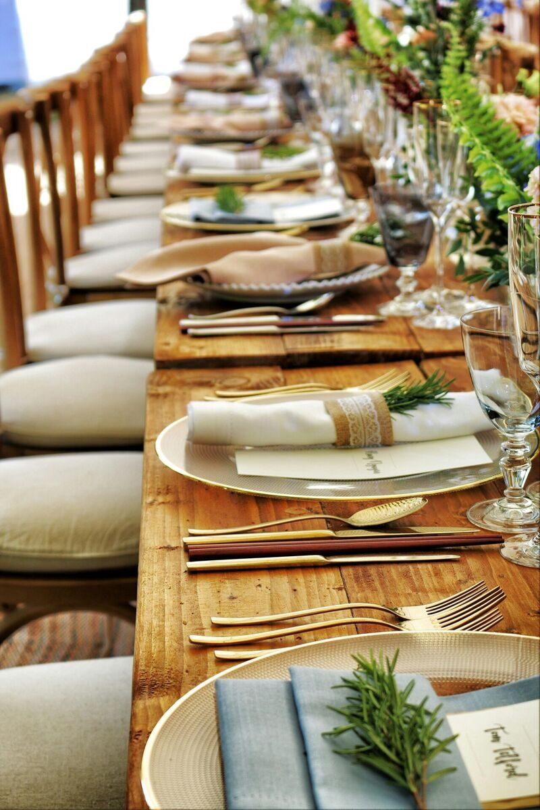

Événements de Dégustation de Vins & Bières
Vivez des événements de dégustation de vins et bières sélectionnés à Beaumont, Mons et dans toute la Belgique. Notre sommelier professionnel sélectionne les meilleurs crus et bières artisanales pour créer une expérience sensorielle inoubliable, que ce soit pour un événement privé, une soirée d'entreprise ou une célébration spéciale.

Ce Que Nous Proposons
Nos dégustations présentent des vins soigneusement sélectionnés et des bières artisanales de régions renommées et de brasseries locales. Chaque dégustation est accompagnée d'accords mets soigneusement choisis qui mettent en valeur les saveurs. Nos événements comprennent des notes de dégustation, des commentaires d'experts et un environnement accueillant pour explorer de nouvelles saveurs.
Comment Ça Fonctionne
Choisissez entre une dégustation de vins, une dégustation de bières ou une expérience combinée. Nous pouvons intervenir chez vous, dans votre entreprise ou dans l'un de nos espaces partenaires à Beaumont et dans le Hainaut. Contactez-nous pour planifier votre événement et nous créerons une sélection personnalisée adaptée à vos goûts et à votre budget.
Questions Fréquentes
Combien de vins ou bières sont inclus dans une dégustation ?
Une dégustation standard comprend 5 à 7 vins ou 6 à 8 bières, chacun accompagné de mets complémentaires.
Pouvez-vous organiser une dégustation pour un événement d'entreprise ?
Oui, les dégustations d'entreprise sont l'une de nos spécialités. Nous proposons des configurations professionnelles.
Quelles zones desservez-vous pour les dégustations ?
Nous desservons Beaumont, Chimay, Mons, Charleroi et l'ensemble de la région du Hainaut.